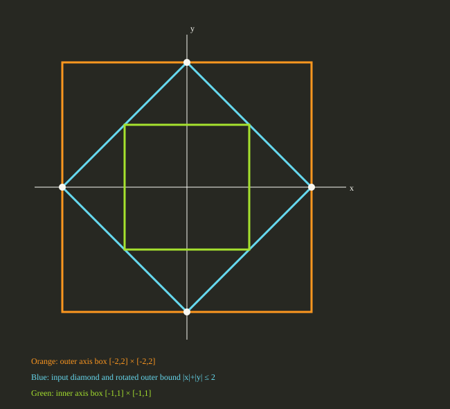

Five authored interval and planar examples exercised the registered public CSL::approximation path at source commit 8fecba49e34c37e5e01c40218a8f014a179818fd. The outer adapters produce H slabs from bounded V vertices. The inner adapters return four supplied corners after checking each against the H input. Exact inclusion checks operate on stored binary64 values. No finite approximation error bound is available.
| Case | Relation | Checked output | Median batch duration |
|---|---|---|---|
| diamond-axis-inner | inner | V corners [[1, 1], [1, -1], [-1, -1], [-1, 1]] | 1,654,900 ns (range 1,569,200–1,692,100) |
| diamond-axis-outer | outer | H rows [[1, 0], [-1, 0], [0, 1], [0, -1]], bounds [2, 2, 2, 2] | 793,200 ns (range 778,400–839,300) |
| diamond-rotated-outer | outer | H rows [[1, 1], [-1, -1], [1, -1], [-1, 1]], bounds [2, 2, 2, 2] | 1,460,200 ns (range 1,386,100–1,469,200) |
| interval-box | outer | H rows [[1], [-1]], bounds [2.25, 1.5] | 607,100 ns (range 590,000–635,500) |
| square-rotated-inner | inner | V corners [[0, 1], [1, 0], [0, -1], [-1, 0]] | 1,230,800 ns (range 1,208,900–1,292,500) |

The 1D interval vertices are −1.5 and 2.25. The complete rows, bounds, orientation and corner declarations for every case, plus SHA-256 input identities, are in records.json. The driver checks literal H coefficients and bounds or every literal V corner after every public call; it also checks relation, structural proof basis and the explicit absence of an error bound. The independent policy verifies V-to-H containment or H-to-V containment before returning an enclosure.
One excluded 100-call warmup per case was followed by seven rotated five-case rounds of 100 calls per case: 3,500 measured calls with zero recorded failures. Each per-call steady-clock interval includes registry selection, fresh provider workspace, adapter execution and independent containment verification. Fixture and registry construction, the post-call literal oracle, CSV output, process launch and HTML rendering are excluded. One worker and one native thread were requested and used. Internal counters are unavailable. These single-adapter observations have no comparator, speedup, source-mapped limiter or scalability conclusion.
Host DESKTOP-S9O3F6S: Intel64 Family 6 Model 151 Stepping 5, GenuineIntel; Windows-11-10.0.22631-SP0; MSVC 19.44 x64 Release. HiGHS and Qhull were disabled. Build provenance, configure log, build log, prebuild receipt, postrun receipt, raw CMake cache and compiler receipt are saved.
At the linked source commit, run python -m cmake -S . -B build/app02 -DBUILD_TESTING=OFF -DCSL_ENABLE_HIGHS=OFF -DCSL_ENABLE_QHULL=OFF -DCSL_BUILD_APP02_REPORT=ON, build target csl_app02_approximation_report in Release, and run it with smoke and measure. The saved driver source and raw measured CSV support independent inspection.